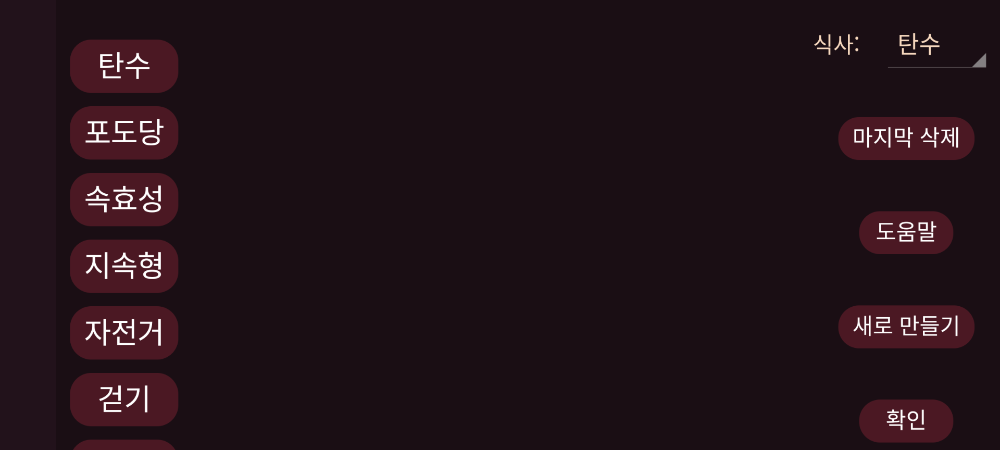

ar be de es fr hi it ja ko nl pl pt ru tr uk uz zh en
여기에서 인슐린, 탄수화물 또는 신체 활동을 나타내기 위해 그래프에 추가하는 입력값의 레이블을 만들고삭제하거나 수정할 수 있습니다. 이미 입력값을 저장했다면 각 입력값에는 위치에 해당하는 레이블이 붙습니다. 따라서 두 번째 위치의 이름을 바꾸면 이전 이름으로 두 번째 위치에 저장한 입력값도 새 이름의 레이블을 갖게 됩니다.
레이블을 수정하려면 누르십시오.
식사, 뒤에서 어느 레이블이 식사의 탄수화물 함량을 나타낼지 선택할 수 있습니다. 해당 레이블에는 왼쪽 가운데 메뉴의 “새 입력값”에 식사 버튼이 추가됩니다. 이 버튼으로 재료를 지정해 식사를 구성할 수 있습니다. 탄수화물 합계가 이 레이블 아래 저장되며, 나중에 저장된 값의 식사를 선택해 해당 식사를 다시 볼 수 있습니다.